Other parts: rootclaim.html, rootclaim2.html, rootclaim3.html.
Kirsch posted this table of the English ONS data, where he pointed out that in April to May 2021 when there was a low number of COVID cases, the ratio between unvaccinated and vaccinated ASMR was higher than in December 2021 to February 2022 when there was a high number of COVID cases: [https://kirschsubstack.com/p/official-uk-ons-data-shows-the-covid]
However in April to May 2021 there were still many people who had been recently vaccinated, so vaccinated people were still heavily impacted by the temporal healthy vaccinee effect (which is a term coined by Jeffrey Morris for the stronger form of HVE which lasts for the first weeks or months after vaccination, as opposed to the inherent HVE that remains in place even long after vaccination).
From the plot below you can roughly see the magnitude of the HVE from the dashed line which shows non-COVID ASMR. The plot below also shows that the ratio between unvaccinated and vaccinated ASMR was in fact elevated during the Delta peak in August 2021 and the COVID wave that peaked in December 2021 to January 2022. But in October 2021 when there was a lower number of COVID deaths than in the surrounding months, the ratio between unvaccinated and vaccinated ASMR was also lower than in the surrounding months:

t=fread("http://sars2.net/f/ons.csv")
t=rbind(t[ed==7&month<="2021-03"],t[ed==9])[cause!="Deaths involving COVID-19"]
t[,x:=as.Date(paste0(month,"-15"))]
t[,vax:=factor(status!="Unvaccinated",,c("Unvaccinated","Vaccinated"))]
a=t[age!="Total",.(cmr=sum(dead)/sum(pop)),.(age,vax,x,cause)]
p=a[,.(y=cmr[1]/cmr[2]),.(age,x,cause)]
p=rbind(p,t[age=="Total"&status%like%"accin",.(y=asmr[1]/asmr[2],age="All ages"),.(x,cause)])
xstart=as.Date("2021-1-1");xend=as.Date("2023-6-1");xbreak=seq(xstart,xend,"year");yend=max(p$y)
ggplot(p)+
facet_wrap(~age,dir="v",ncol=2)+
geom_hline(yintercept=2:8,color="gray91",linewidth=.4)+
geom_hline(yintercept=1,color="gray60",linewidth=.4)+
geom_vline(xintercept=seq(xstart,xend,"year"),color="gray60",linewidth=.4)+
geom_rect(data=p[,max(y),age],aes(xmin=xstart,xmax=xend,ymin=0,ymax=yend),linewidth=.4,fill=NA,color="black",lineend="square")+
geom_line(aes(x,y,linetype=cause),linewidth=.6)+
geom_text(data=p[,max(y),age],aes(x=as.Date("2022-7-1"),y=yend,label=age),hjust=.5,fontface=2,vjust=1.5,size=3.8)+
labs(x=NULL,y=NULL,title="Ratio between unvaccinated and vaccinated mortality rate\nin English ONS data")+
scale_x_continuous(limits=c(xstart-.5,xend+.5),breaks=xbreak,labels=year(xbreak))+
scale_y_continuous(breaks=seq(1,7,2))+
scale_linetype_manual(values=c("solid","11"))+
scale_alpha_manual(values=c(1,0),guide="none")+
coord_cartesian(clip="off",expand=F)+
guides(color=guide_legend(order=1),linetype=guide_legend(order=2))+
theme(axis.text=element_text(hjust=0,size=11,color="black"),
axis.title=element_text(size=11,face=2),
axis.text.x=element_text(margin=margin(3)),
axis.ticks=element_line(linewidth=.4,color="black"),
axis.ticks.length.x=unit(0,"pt"),
axis.ticks.length.y=unit(4,"pt"),
legend.background=element_blank(),
legend.box.spacing=unit(0,"pt"),
legend.direction="horizontal",
legend.justification="right",
legend.key=element_blank(),
legend.key.height=unit(13,"pt"),
legend.key.width=unit(21,"pt"),
legend.margin=margin(,,5),
legend.position="top",
legend.spacing.x=unit(2,"pt"),
legend.spacing.y=unit(0,"pt"),
legend.text=element_text(size=11,vjust=.5),
legend.title=element_blank(),
panel.background=element_blank(),
panel.spacing=unit(2,"pt"),
plot.margin=margin(5,5,5,5),
plot.title=element_text(size=11,face=2,margin=margin(2,,4)),
strip.background=element_blank(),
strip.text=element_blank())
ggsave("1.png",width=4.8,height=4.1,dpi=300*4)
system(paste0("magick 1.png -trim -resize 25% -bordercolor white -border 24 -colors 256 1.png"))
The next plot shows that there was a period with elevated COVID deaths that lasted from around August 2021 until January 2022. But between January and February 2022 when there was a big drop in COVID deaths, there was also a clear drop in the ratio of all-cause ASMR between unvaccinated and vaccinated people:

library(data.table);library(ggplot2)
t=fread("http://sars2.net/f/ons.csv")
t=rbind(t[ed==7&month<="2021-03"],t[ed==9])
t[,x:=as.Date(paste0(month,"-15"))]
t[,vax:=factor(status!="Unvaccinated",,c("Unvaccinated","Vaccinated"))]
a=t[age!="Total",.(y=sum(dead)/sum(pop)*1e5),.(age,x,vax,cause)]
a=rbind(a,t[age=="Total"&status%like%"accin",.(x,y=asmr,age="All ages",vax,cause)])
p=a[cause!="Non-COVID-19 deaths"]
p[cause=="Deaths involving COVID-19",cause:="COVID deaths"]
xstart=as.Date("2021-1-1");xend=as.Date("2023-6-1");xbreak=seq(xstart,xend,"year")
ggplot(p)+
facet_wrap(~age,dir="v",scales="free_y",ncol=2)+
geom_vline(xintercept=seq(xstart,xend,"year"),color="gray60",linewidth=.4)+
geom_rect(data=p[,max(y),age],aes(xmin=xstart,xmax=xend,ymin=0,ymax=V1),linewidth=.4,fill=NA,color="black",lineend="square")+
geom_line(aes(x,y,linetype=cause,color=vax))+
geom_text(data=p[,max(y),age],aes(x=as.Date("2022-7-1"),y=V1,label=age),hjust=.5,fontface=2,vjust=1.5,size=3.8)+
labs(x=NULL,y=NULL,title="Monthly mortality rates in English ONS data")+
scale_x_continuous(limits=c(xstart-.5,xend+.5),breaks=xbreak,labels=year(xbreak))+
scale_y_continuous(breaks=\(x){y=pretty(x,4);y[y<.85*max(x)]},labels=\(x)ifelse(x<1000,x,paste0(x/1e3,"k")))+
scale_color_manual(values=c("#66f","#f66","black"))+
scale_linetype_manual(values=c("solid","11"))+
scale_alpha_manual(values=1:0)+
coord_cartesian(clip="off",expand=F)+
guides(color=guide_legend(order=1),linetype=guide_legend(order=2))+
theme(axis.text=element_text(hjust=0,size=11,color="black"),
axis.title=element_text(size=11,face=2),
axis.text.x=element_text(margin=margin(3)),
axis.ticks=element_line(linewidth=.4,color="black"),
axis.ticks.length.x=unit(0,"pt"),
axis.ticks.length.y=unit(4,"pt"),
legend.background=element_rect(color="black",linewidth=.4),
legend.box.margin=margin(,,2),
legend.box.spacing=unit(0,"pt"),
legend.direction="horizontal",
legend.justification="right",
legend.key=element_blank(),
legend.key.height=unit(13,"pt"),
legend.key.width=unit(21,"pt"),
legend.margin=margin(3,4,3,3),
legend.position="top",
legend.spacing.x=unit(2,"pt"),
legend.spacing.y=unit(0,"pt"),
legend.text=element_text(size=11,vjust=.5),
legend.title=element_blank(),
panel.background=element_blank(),
panel.spacing=unit(2,"pt"),
plot.margin=margin(5,5,5,5),
plot.title=element_text(hjust=.5,size=11,face=2,margin=margin(2,,4)),
strip.background=element_blank(),
strip.text=element_blank())
ggsave("1.png",width=5.47,height=4.3,dpi=300*4)
sub="The values for individual age groups are crude mortality rates per 100,000 person-years, and the values for all ages are age-standardized mortality rates per 100,000 person-years. The data was taken from Tables 1 and 2 of the ONS dataset \"Deaths involving COVID-19 by vaccination status, England\". Data for the first three months of 2021 was taken from the July 2022 edition and data for other months was taken from the August 2023 edition. People are counted as vaccinated on the day of the first dose. COVID deaths are deaths where COVID was mentioned anywhere on the death certificate."
system(paste0("mogrify -trim 1.png;magick 1.png \\( -size `identify -format %w 1.png`x -font Arial -interline-spacing -3 -pointsize $[43*4] caption:'",gsub("'","'\\\\'",sub),"' -splice x80 \\) -append -resize 25% -bordercolor white -border 24 -colors 256 1.png"))
Someone in Kirsch's Substack comments asked why February 2021 was an outlier in Kirsch's table, because in his table the ratio between unvaccinated and vaccinated ASMR was about 2.0 in January 2021, 5.8 in February, 3.7 in March, and 2.6 in April. I pointed out that in February a large part of vaccinated people had been vaccinated in recent weeks, and the ONS dataset has a very low number of deaths in the first 2 weeks after vaccination: [stat.html#Plot_deaths_by_weeks_after_vaccination_and_age_group]

I also pointed out that there was high COVID mortality in both January and February 2021. In January 2021 COVID ASMR accounted for about half of total ASMR in both unvaccinated and vaccinated people, but in February COVID ASMR now accounted for about 41% of total ASMR in unvaccinated people but only about 20% of total ASMR in vaccinated people, so vaccinated people had a much bigger drop in the percentage between January and February. I think it's because in Janury 2021 many vaccinated people had been vaccinated so recently that there had not yet been enough time for the immune response to build up after vaccination. But in February 2021 a larger part of vaccinated people had been vaccinated at least 2 or 3 weeks ago so the vaccines were now more effective. So the COVID deaths increased the ratio between unvaccinated and vaccinated ASMR more in February than January:
ons=fread("https://sars2.net/f/ons.csv")[ed==7&age=="Total"]
o=ons[status%like%"accin",asmr[cause=="Deaths involving COVID-19"]/asmr[cause=="All causes"]*100,.(month,status)]
o[,.(unvaccinated=V1[1],vaccinated=V1[2]),month][,ratio:=unvaccinated/vaccinated]|>mutate_if(is.double,round,1)|>print(r=F)
# month unvaccinated vaccinated ratio
# 2021-01 47.3 53.7 0.9
# 2021-02 41.3 20.3 2.0
# 2021-03 17.9 6.0 3.0
# 2021-04 6.3 1.8 3.5
# 2021-05 2.6 0.7 3.8
# 2021-06 3.5 0.8 4.6
# 2021-07 13.5 2.6 5.3
# 2021-08 23.6 5.0 4.7
# 2021-09 22.1 6.6 3.3
# 2021-10 19.8 6.4 3.1
# 2021-11 24.7 6.5 3.8
# 2021-12 27.7 5.0 5.5
# 2022-01 32.3 10.1 3.2
# 2022-02 18.7 7.4 2.5
# 2022-03 14.9 7.5 2.0
# 2022-04 17.0 9.6 1.8
# 2022-05 8.9 4.3 2.1
Another reason why the ratio between unvaccinated and vaccinated ASMR was higher in February than January is probably because vulnerable groups of people were priorized for early vaccination.
In the next plot of Dutch CBS data if you look at the left panel which shows people who are not in long-term care, the black line shows that the ratio between unvaccinated and vaccinated ASMR was clearly elevated during the COVID wave in the winter of 2021-2022. But the black line was still higher in May 2021 than in the winter of 2021-2022, because the HVE was stronger in May 2021. You can estimate the magnitude of the HVE based on the gray line which shows the ratio of non-COVID ASMR: [rootclaim3.html#Comparison_to_Dutch_CBS_data]

From the light blue line in the next plot, you can see that in the Czech record-level datasets the ratio between unvaccinated and vaccinated non-COVID ASMR follows a fairly smooth downward curve like in the English and Dutch data. But the bright blue line shows that the ratio between unvaccinated and vaccinated all-cause ASMR is elevated in the Czech Republic in the winter of 2021-2022:
In the Substack I linked previously, Kirsch also wrote:
I did it by 10 year age groups (using a pivot on Table 2) just to make sure and here's what it looks like for 60-69:
As you can see, the ASMR jumps instantly with Omicron at a time when the unvaccinated are decreasing their mortality.
That's hard to explain how the vaccine is helping with such a huge disparity where the vaccinated start dying in droves exactly when Omicron rolls out. Coincidence?
So you'd have to argue that the data is invalid.
The healthy vaccinee effect explains why the ASMR of people with two but not more doses shoots up when the third dose was rolled out, because the healthy vaccinees moved under the third dose and people with elevated mortality risk remained under the second dose:
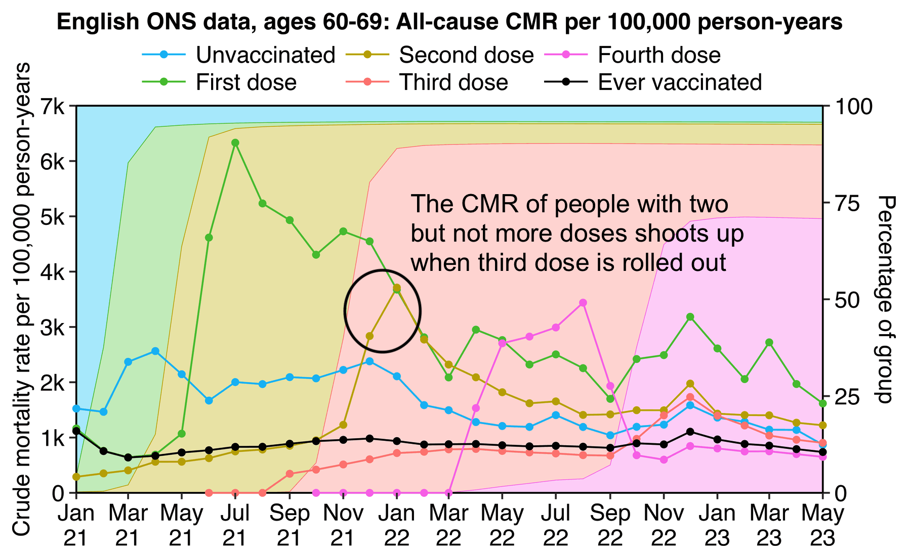
t=fread("http://sars2.net/f/ons.csv")[cause=="All causes"&age=="60-69"]
t=rbind(t[ed==7&month<="2021-03"],t[ed==9])
p=t[,.(dead=sum(dead),pop=sum(pop)),.(date=as.Date(paste0(month,"-1")),status=sub("(,| or).*","",status))]
p=rbind(p,a[status!="Unvaccinated",.(dead=sum(dead),pop=sum(pop),status="Ever vaccinated"),date])
p[,status:=factor(status,unique(status))]
p[,cmr:=dead/pop*1e5]
ybreak=pretty(p$cmr,6);ystart=0;yend=max(ybreak);xstart=min(p$date);xend=max(p$date)
pal=c(hcl(c(21,11,6,0,30)*10+15,90,70),"black")
frac=p[status!="Ever vaccinated",.(frac=pop/sum(pop),status),date]
ggplot(p,aes(date,cmr,color=status))+
geom_area(data=frac,aes(y=frac*yend*.9999,fill=status),linewidth=.15,show.legend=F,alpha=.3)+
annotate("rect",xmin=xstart,xmax=xend,ymin=ystart,ymax=yend,linewidth=.4,lineend="square",fill=NA,color="black")+
geom_line(linewidth=.4)+
geom_point(size=1.1)+
scale_x_date(breaks=unique(p$date)[c(T,F)],date_labels="%b\n%y")+
scale_y_continuous(limits=c(ystart,yend),breaks=seq(0,yend,1000),labels=\(i)ifelse(i<1000,i,paste0(i/1e3,"k")),sec.axis=sec_axis(trans=~./yend*100,name="Percentage of group"))+
labs(x=NULL,y="Crude mortality rate per 100,000 person-years")+
ggtitle("English ONS data, ages 60-69: All-cause CMR per 100,000 person-years")+
scale_color_manual(values=pal)+
scale_fill_manual(values=pal)+
coord_cartesian(clip="off",expand=F)+
guides(color=guide_legend(ncol=3))+
theme(axis.text=element_text(size=11,color="black"),
axis.ticks=element_line(linewidth=.4),
axis.ticks.length=unit(3,"pt"),
axis.title=element_text(size=11),
legend.background=element_blank(),
legend.box.just="center",
legend.box.spacing=unit(0,"pt"),
legend.direction="vertical",
legend.justification="center",
legend.key=element_rect(fill="white"),
legend.key.height=unit(13,"pt"),
legend.key.width=unit(26,"pt"),
legend.margin=margin(,,5),
legend.position="top",
legend.spacing.x=unit(2,"pt"),
legend.spacing.y=unit(0,"pt"),
legend.text=element_text(size=11),
legend.title=element_blank(),
panel.background=element_blank(),
plot.title=element_text(size=11,hjust=.5,face=2,margin=margin(,,3)))
ggsave("1.png",width=6,height=3.7,dpi=300*4)
system("magick 1.png -trim -resize 25% -bordercolor white -border 24 -dither none -colors 256 1.png")
In the previous plot the "Second dose" category meant people with two but not more doses. But if you look at people with two or more doses instead, their CMR remains stable even after the third dose is rolled out:
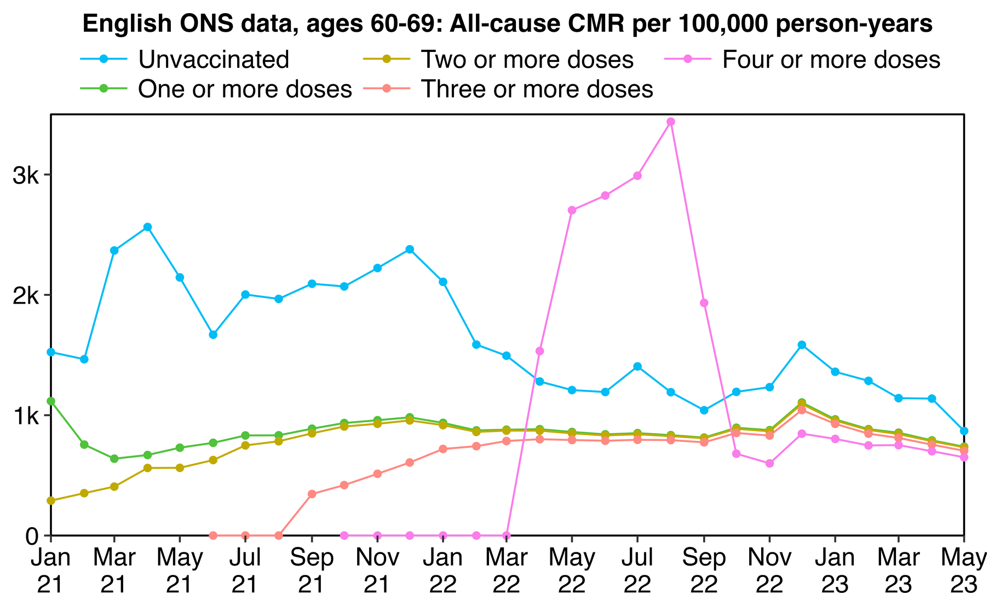
t=fread("http://sars2.net/f/ons.csv")[cause=="All causes"&age=="60-69"]
t=rbind(t[ed==7&month<="2021-03"],t[ed==9])
t[,status:=sub("(,| or).*","",status)]
t[,status:=as.integer(factor(status,unique(status)))]
t[,date:=as.Date(paste0(month,"-1"))]
p=do.call(rbind,lapply(1:5,\(i)t[if(i==1)status==1 else status>=i,.(dead=sum(dead),pop=sum(pop),status=i),date]))
p[,status:=factor(status,,c("Unvaccinated",paste(c("One","Two","Three","Four"),"or more doses")))]
p[,cmr:=dead/pop*1e5]
ybreak=pretty(p$cmr,6);ystart=0;yend=max(ybreak);xstart=min(p$date);xend=max(p$date)
pal=c(hcl(c(21,11,6,0,30)*10+15,90,70),"black")
ggplot(p,aes(date,cmr,color=status))+
annotate("rect",xmin=xstart,xmax=xend,ymin=ystart,ymax=yend,linewidth=.4,lineend="square",fill=NA,color="black")+
geom_line(linewidth=.4)+
geom_point(size=1.1)+
scale_x_date(breaks=unique(p$date)[c(T,F)],date_labels="%b\n%y")+
scale_y_continuous(limits=c(ystart,yend),breaks=seq(0,yend,1000),labels=\(i)ifelse(i<1000,i,paste0(i/1e3,"k")))+
labs(x=NULL,y=NULL)+
ggtitle("English ONS data, ages 60-69: All-cause CMR per 100,000 person-years")+
scale_color_manual(values=pal)+
scale_fill_manual(values=pal)+
coord_cartesian(clip="off",expand=F)+
guides(color=guide_legend(ncol=3))+
theme(axis.text=element_text(size=11,color="black"),
axis.ticks=element_line(linewidth=.4),
axis.ticks.length=unit(3,"pt"),
axis.title=element_text(size=11),
legend.background=element_blank(),
legend.box.just="center",
legend.box.spacing=unit(0,"pt"),
legend.direction="vertical",
legend.justification="center",
legend.key=element_rect(fill="white"),
legend.key.height=unit(13,"pt"),
legend.key.width=unit(26,"pt"),
legend.margin=margin(,,5),
legend.position="top",
legend.spacing.x=unit(2,"pt"),
legend.spacing.y=unit(0,"pt"),
legend.text=element_text(size=11),
legend.title=element_blank(),
panel.background=element_blank(),
plot.margin=margin(5,10,5,5),
plot.title=element_text(size=11,hjust=.5,face=2,margin=margin(,,3)))
ggsave("1.png",width=6,height=3.7,dpi=300*4)
system("magick 1.png -trim -resize 25% -bordercolor white -border 24 -dither none -colors 256 1.png")
Fenton et al. have hypothesized that the reason why the mortality rate of people with two but not more doses shot up when the third dose was rolled out was because people who died soon after getting the third dose were misclassified under the second dose. But if that was the case, you'd expect there to also be an increase in the mortality rate of people with two or more doses.
But that's not the case, as you can also see from the next plot where I plotted an excess crude mortality rate in ages 60-69 relative to the general population of England. It shows that in December 2021 people with three doses had about 45% lower crude mortality rate than the general population of England. So conversely people who remained under the second dose had elevated mortality in December 2021, because the total mortality of people with two or more doses remained stable. In October 2021 people with three doses had -60% excess mortality which was even lower than in December 2021, but in October the population size of people with two doses was still so large that people with two doses still had negative excess mortality. But the excess mortality of people with two doses gradually increased over the next three months as more people moved under the third dose, so that the monthly person-years of people with two doses dropped from about 432,000 in October 2021 to about 31,000 in January 2022:
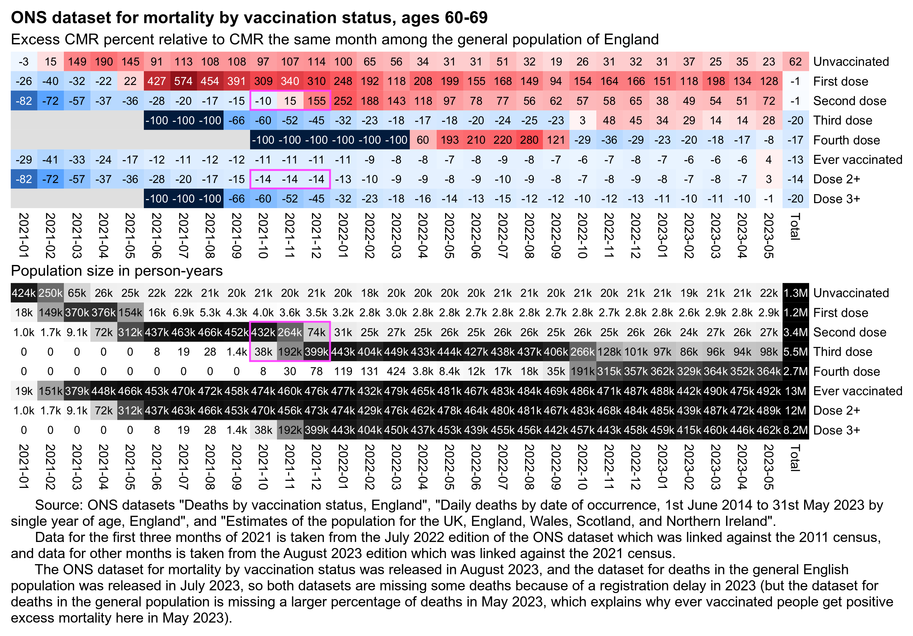
download.file("https://www.ons.gov.uk/file?uri=/peoplepopulationandcommunity/birthsdeathsandmarriages/deaths/adhocs/1343dailydeathsbydateofoccurrence1stjune2014to31stmay2023bysingleyearofageengland/dailydeaths2014to2023england.xlsx","dailydeaths2014to2023england.xlsx")
library(data.table)
sum0=\(...)sum(...,na.rm=T)
kimi=\(x){e=floor(log10(ifelse(x==0,1,abs(x))));e2=pmax(e,0)%/%3+1;p=!is.na(x);x[p]=paste0(sprintf(paste0("%.",ifelse(e[p]%%3==0,1,0),"f"),x[p]/1e3^(e2[p]-1)),c("","k","M","B","T")[e2[p]]);x}
ons=fread("http://sars2.net/f/ons.csv")[cause=="All causes"&age=="60-69"]
ons=rbind(ons[ed==9],ons[ed==7&month<="2021-03"])
p=ons[,.(dead=sum0(dead),pop=sum0(pop)),.(status=sub("( or booster|,).*","",status),month)]
p=rbind(p,ons[status!="Unvaccinated",.(dead=sum0(dead),pop=sum0(pop),status="Ever vaccinated"),month])
p=rbind(p,ons[status%like%"Second|Third|Fourth",.(dead=sum0(dead),pop=sum0(pop),status="Dose 2+"),month])
p=rbind(p,ons[status%like%"Third|Fourth",.(dead=sum0(dead),pop=sum0(pop),status="Dose 3+"),month])
p[,status:=factor(status,c("Unvaccinated","First dose","Second dose","Third dose","Fourth dose","Ever vaccinated","Dose 2+","Dose 3+"))]
dead=setDT(readxl::read_excel("dailydeaths2014to2023england.xlsx",sheet=4,range="A6:CP3293"))
dead=dead[,.(date=as.Date(paste0(Year,"-",Month,"-",Day)),age=rep(0:90,each=.N),dead=unlist(.SD[,-(1:3)],,F))]
pop=fread("http://sars2.net/f/englandpop.csv")[,date:=as.Date(paste0(year,"-7-1"))]
pop=pop[,with(spline(date,pop,xout=unique(dead$date)),.(date=`class<-`(x,"Date"),pop=y)),age]
p=merge(p,merge(dead,pop)[age%in%60:69,.(basedead=sum(dead),basepop=sum(pop)/365),.(month=substr(date,1,7))])
p=rbind(p,p[,.(dead=sum(dead),pop=sum(pop),basedead=sum(basedead),basepop=sum(basepop),month="Total"),status])
p[,cmr:=dead/pop][,base:=basedead/basepop]
m=p[,tapply((cmr-base)/ifelse(cmr>base,base,cmr),.(status,month),c)]
disp=p[,tapply((cmr/base-1)*100,.(status,month),round)]
m2=p[,xtabs(pop~status+month)]
max1=9;max2=max(m2[,-ncol(m2)]);exp1=.6;exp2=1
m[m==-Inf]=-max1
pal1=hsv(rep(c(21/36,0),4:5),c(1,.8,.6,.3,0,.3,.6,.8,1),c(.3,.65,1,1,1,1,1,.65,.3))
pal2=sapply(seq(1,0,,256),\(i)rgb(i,i,i))
pheatmap::pheatmap(sign(m)*abs(m)^exp1,filename=paste0("i1.png"),display_numbers=disp,
cluster_rows=F,cluster_cols=F,legend=F,cellwidth=19,cellheight=19,fontsize=9,fontsize_number=8,
border_color=NA,na_col="gray90",number_color=ifelse(abs(m)^exp1>max1^exp1*.53,"white","black"),
breaks=seq(-max1^exp1,max1^exp1,,256),colorRampPalette(pal1)(256))
pheatmap::pheatmap(m2^exp2,filename=paste0("i2.png"),display_numbers=ifelse(m2<10,m2,kimi(m2)),
cluster_rows=F,cluster_cols=F,legend=F,cellwidth=19,cellheight=19,fontsize=9,fontsize_number=8,
border_color=NA,na_col="gray90",number_color=ifelse(m2^exp2>max2^exp2*.42,"white","black"),
breaks=seq(0,max2^exp2,,256),pal2)
sub="\u00a0 Source: ONS datasets \"Deaths by vaccination status, England\", \"Daily deaths by date of occurrence, 1st June 2014 to 31st May 2023 by single year of age, England\", and \"Estimates of the population for the UK, England, Wales, Scotland, and Northern Ireland\".
Data for the first three months of 2021 is taken from the July 2022 edition of the ONS dataset which was linked against the 2011 census, and data for other months is taken from the August 2023 edition which was linked against the 2021 census.
The ONS dataset for mortality by vaccination status was released in August 2023, and the dataset for deaths in the general English population was released in July 2023, so both datasets are missing some deaths because of a registration delay in 2023 (but the dataset for deaths in the general population is missing a larger percentage of deaths in May 2023, which explains why ever vaccinated people get positive excess mortality here in May 2023)."
system(paste0("mogrify -trim i[12].png;w=`identify -format %w i1.png`;magick -size $w \\( -pointsize 50 -font Arial-Bold caption:'ONS dataset for mortality by vaccination status, ages 60-69' -splice x10 \\) -pointsize 45 -font Arial \\( caption:'Excess CMR percent relative to CMR the same month among the general population of England' i1.png -splice x24 \\) \\( caption:'Population size in person-years' i2.png -splice x24 \\) \\( -pointsize 42 -font Arial caption:'",gsub("'","'\\\\'",sub),"' -splice x20 \\) -append -trim -bordercolor white -border 32 1.png"))
So Kirsch was wrong when he wrote that "the vaccinated start dying in droves exactly when Omicron rolls out". The total mortality rate of vaccinated people remained roughly stable even after Omicron emerged, but Kirsch's table only showed that the mortality rate of people with two but not more doses went up in December 2021. But it wasn't because of Omicron but because the third dose was rolled out.
In this plot the x-axis shows doses per 100 people in each state, and the y-axis shows average monthly deaths in 2021-2022 divided by the average monthly deaths in July to November 2020: [https://kirschsubstack.com/p/simple-linear-regression-of-official]
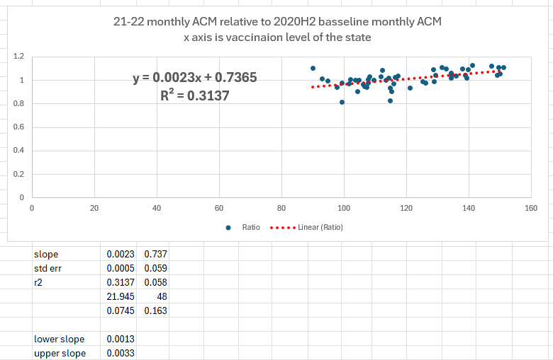
The reason why Kirsch got a positive correlation between the variables was because many southern states had a COVID wave in summer to fall of 2020 but northern states generally did not, and southern states had a lower percentage of vaccinated people. So the excess deaths due to COVID elevated the baseline more in southern states.
When I used the average monthly deaths in 2019 as the baseline instead, I got a negative correlation between the percentage of vaccinated people and deaths in 2021-2022:
# copied from Kirsch's spreadsheet (doses per 100 in November 2021 CDC data)
vax=data.table(state=c(state.name,"District of Columbia"))
vax$vax=c(99,112,114,106,136,129,150,129,129,105,NA,93,126,104,115,116,108,102,147,139,150,112,125,98,107,107,104,117,140,138,134,141,117,99,108,110,131,139,149,108,115,102,115,113,151,134,133,90,121,95,135)
vax=vax[state!="Hawaii"]
t=fread("http://sars2.net/f/wonderstatemonthlydead.csv")
t1=t[date>="2021-01"&date<="2022-12",.(dead=mean(dead)),state]
t2=t[date>="2019-01"&date<="2019-12",.(base=mean(dead)),state]
merge(merge(t1,t2),vax)[,cor(dead/base,vax)]
# [1] -0.4080108 (baseline is whole 2019)
And I also got a negative correlation when I used the whole of 2020 as the baseline:
t3=t[date>="2020-01"&date<="2020-12",.(base=mean(dead)),state] merge(merge(t1,t3),vax)[,cor(dead/base,vax)] # [1] -0.2157941
But I only got a positive correlation when I used July to November 2020 as the baseline like Kirsch:
t3=t[date>="2020-07"&date<="2020-11",.(base=mean(dead)),state] merge(merge(t1,t3),vax)[,cor(dead/base,vax)] # [1] 0.5609224
In the next plot I first converted monthly deaths in each state to a percentage of average monthly deaths in the same state in 2019. Then I picked the 10 states with the highest and lowest number of vaccine doses per hundred people in Kirsch's spreadsheet, and I calculated the average monthly percentage of deaths for both groups. It's easy to see how the least-vaccinated states had higher mortality in July to November 2020 than the most-vaccinated states:
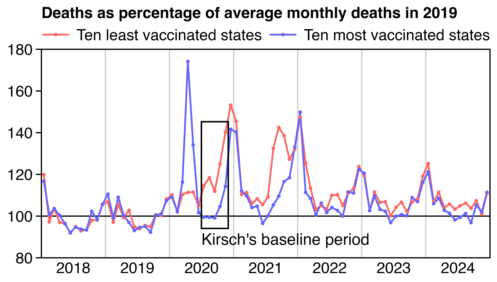
# copied from Kirsch's spreadsheet (doses per 100 in November 2021 CDC data)
vax=data.table(state=c(state.name,"District of Columbia"))
vax$vax=c(99,112,114,106,136,129,150,129,129,105,NA,93,126,104,115,116,108,102,147,139,150,112,125,98,107,107,104,117,140,138,134,141,117,99,108,110,131,139,149,108,115,102,115,113,151,134,133,90,121,95,135)
vax=vax[state!="Hawaii"]
t=fread("http://sars2.net/f/wonderstatemonthlydead.csv")
a=merge(t,t[date%like%2019,mean(dead),state])[,.(state,date,pct=dead/V1*100)]
states=vax[order(vax),state]
p=a[state%in%states[1:10],.(y=mean(pct),z=1),.(x=date)]
p=rbind(p,a[state%in%tail(states,10),.(y=mean(pct),z=2),.(x=date)])
p[,z:=factor(z,,paste("Ten",c("least","most"),"vaccinated states"))]
p[,x:=as.Date(paste0(x,"-15"))]
xstart=as.Date("2018-1-1");xend=as.Date("2025-1-1")
xbreak=seq(xstart+182,xend,"year")
p=p[x%in%xstart:xend]
ybreak=pretty(p$y,5)
x1=as.Date("2020-7-1");x2=as.Date("2020-12-1")
annoy=p[x%in%x1:x2,range(y)]
ggplot(p)+
geom_vline(xintercept=seq(xstart,xend,"year"),color="gray50",linewidth=.4)+
geom_hline(yintercept=100,linewidth=.4)+
geom_line(aes(x,y,color=z),linewidth=.6)+
geom_point(aes(x,y,color=z),stroke=0,size=1.2)+
annotate("rect",xmin=x1,xmax=x2,ymin=annoy[1]-5,ymax=annoy[2]+5,linewidth=.5,color="black",fill=NA,lineend="square")+
annotate("text",hjust=0,x=x1,y=89,size=4,label="Kirsch's baseline period")+
labs(x=NULL,y=NULL,title="Deaths as percentage of average monthly deaths in 2019")+
scale_x_continuous(limits=c(xstart,xend),breaks=xbreak,labels=year(xbreak))+
scale_y_continuous(limits=range(ybreak),breaks=ybreak)+
scale_color_manual(values=c("#ff6666","#6666ff"))+
coord_cartesian(clip="off",expand=F)+
theme(axis.text=element_text(size=11,color="black"),
axis.text.x=element_text(margin=margin(3)),
axis.ticks=element_line(linewidth=.4,color="black"),
axis.ticks.length.x=unit(0,"pt"),
axis.ticks.length.y=unit(4,"pt"),
legend.background=element_blank(),
legend.box.spacing=unit(0,"pt"),
legend.direction="horizontal",
legend.justification="right",
legend.key=element_blank(),
legend.key.height=unit(13,"pt"),
legend.key.width=unit(24,"pt"),
legend.margin=margin(,,4),
legend.position="top",
legend.spacing.x=unit(3,"pt"),
legend.spacing.y=unit(0,"pt"),
legend.text=element_text(size=11,vjust=.5),
legend.title=element_blank(),
panel.background=element_blank(),
panel.border=element_rect(fill=NA,linewidth=.4),
plot.margin=margin(4,5,4,5),
plot.title=element_text(size=11,face=2,margin=margin(1,,3)))
ggsave("1.png",width=4.92,height=2.8,dpi=300*4)
(In order to be consistent with Kirsch's analysis, in my analysis above I excluded Hawaii but I treated District of Columbia as a state.)
Kirsch linked a paper by Vibeke Manniche, Tomáš Fürst, and Max Schmelling titled "Rates of Successful Conceptions According to COVID-19 Vaccination Status: Data from the Czech Republic": https://www.preprints.org/manuscript/202504.2487/v1.
The authors made a major error when they calculated the number of women who were vaccinated at conception. The error was independently discovered by Uncle John Returns and Peter Hegarty: https://x.com/PeterHegarty17/status/1917606473644879924.
The authors took the number of women who were vaccinated at delivery and subtracted the number of women who got vaccinated during pregnancy. But women who got vaccinated during pregnancy included women who had received a first dose before conception but who got a second dose or a booster dose during pregnancy.
The authors posted a spreadsheet of the data here: https://github.com/Schmeling-M/C-19-Conception. The "Computation" sheet shows that the authors calculated that in June 2021 there were 493 successful conceptions in vaccinated women:
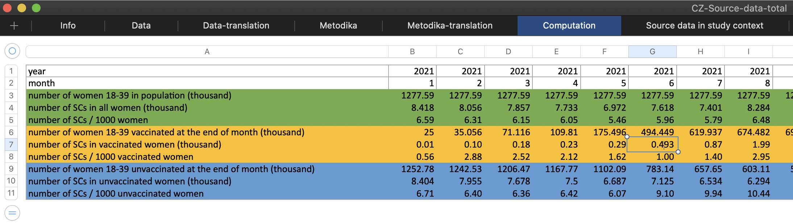
The figure was calculated based on the row for October 2022 in the "Data-translation" sheet, since the authors assumed that the date of conception was 9 months before the date of birth. The authors took total births (7,618), subtracted unvaccinated births (4,499), and subtracted women who were vaccinated during pregnancy (2,626), which gave them the figure of 493:
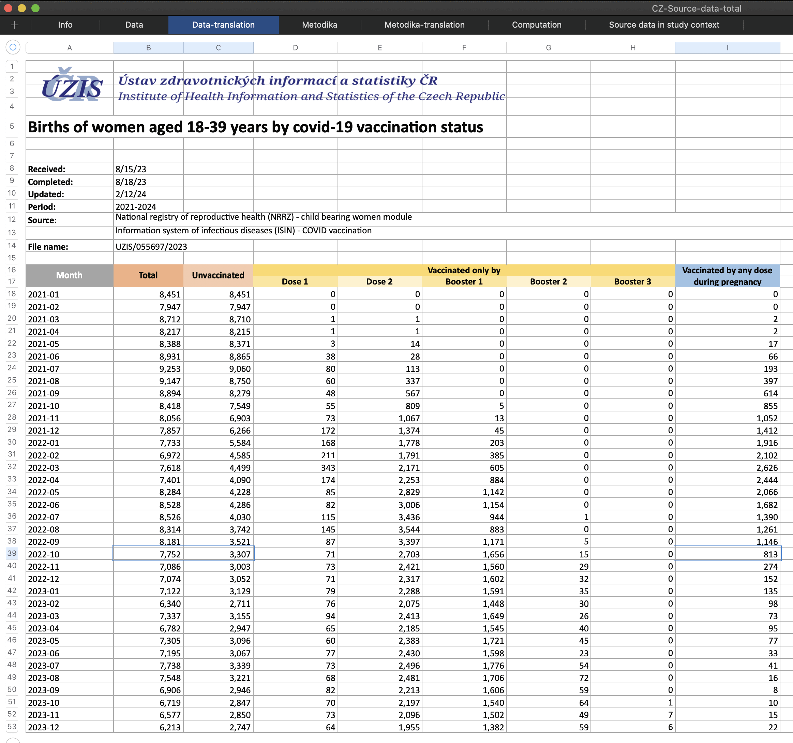
However in reality the number of women who were unvaccinated at conception may have been much higher, if the 2,626 women who were vaccinated during pregnancy included many women who had received the first dose before conception but who received an additional dose during pregnancy.
In October 2022 the spreadsheet has 813 births in women who were "vaccinated by any dose during pregnancy", which is about 10% of 7,752 total births the same month. You can tell it doesn't mean the women received a first dose during pregnancy but that they received any dose, because in the Czech record-level data only about 15.8% of women aged 18-39 had received any vaccine dose in the 270-day period October 16th 2022, but only about 1.0% of women had received a first dose in the same period:
rec=fread("curl -Ls github.com/skirsch/Czech/raw/refs/heads/main/data/CR_records.csv.xz|xz -dc")
sub=rec[(2021-Rok_narozeni)%in%18:39&Pohlavikod=="F"]
d=sub[,.(id=.I,dose=rep(1:7,each=.N),date=`class<-`(unlist(.SD),"Date")),.SDcols=grep("^Datum_",names(sub))]
dates=seq(as.Date("2021-1-16"),as.Date("2023-12-16"),"month")
r=do.call(rbind,lapply(dates,\(x)d[(x-date)%in%0:270,.(date=x,any=length(unique(id)),first=sum(dose==1))]))
people=max(d$id)
mutate_if(r[,.(date,anydose=any/people*100,firstdose=first/people*100)],is.double,round,1)|>print(r=F)
# date anydose firstdose
# 2021-01-16 1.3 1.3
# 2021-02-16 2.2 2.2
# 2021-03-16 4.3 4.3
# 2021-04-16 6.7 6.7
# 2021-05-16 10.1 10.1
# 2021-06-16 28.5 28.5
# 2021-07-16 43.7 43.7
# 2021-08-16 50.3 50.3
# 2021-09-16 53.2 53.2
# 2021-10-16 54.7 53.3
# 2021-11-16 59.1 57.8
# 2021-12-16 64.1 60.3
# 2022-01-16 65.0 59.2
# 2022-02-16 65.5 56.2
# 2022-03-16 64.2 36.6
# 2022-04-16 59.3 22.7
# 2022-05-16 47.5 16.6
# 2022-06-16 42.3 13.9
# 2022-07-16 40.6 12.5
# 2022-08-16 36.9 6.9
# 2022-09-16 28.7 2.2
# 2022-10-16 15.8 1.0
# 2022-11-16 7.6 0.5
# 2022-12-16 6.2 0.4
# 2023-01-16 5.2 0.3
# 2023-02-16 4.2 0.2
# 2023-03-16 3.6 0.2
# 2023-04-16 3.1 0.2
# 2023-05-16 2.4 0.1
# 2023-06-16 1.8 0.1
# 2023-07-16 1.1 0.1
# 2023-08-16 0.5 0.0
# 2023-09-16 0.3 0.0
# 2023-10-16 0.3 0.0
# 2023-11-16 0.5 0.0
# 2023-12-16 0.5 0.0
# date anydose firstdose
So based on the data provided by the authors, it is not possible to calculate fertility rate by date of conception but only by date of delivery.
However it also looks unusual, because unvaccinated women still have a massive increase in the rate of births during the second half of 2021, and vaccinated women have a very low rate of births in 2021:
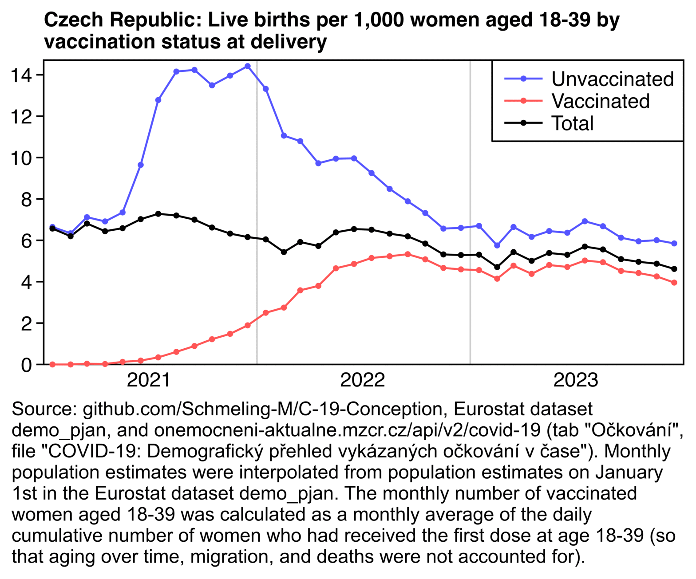
system("wget https://onemocneni-aktualne.mzcr.cz/api/v2/covid-19/ockovani-demografie.csv")
system("wget https://github.com/Schmeling-M/C-19-Conception/raw/refs/heads/main/CZ-source-data.zip;unzip CZ-source-data.zip")
api="https://ec.europa.eu/eurostat/api/dissemination/sdmx/2.1/data/"
pop=fread(paste0(api,"demo_pjan?format=TSV"),sep="\t",header=T,na.strings=":")
meta=fread(text=pop[[1]],header=F)
pick=meta[,V5=="CZ"&V4=="F"]
pop=cbind(meta[pick,.(age=V3)],year=rep(1960:2024,each=sum(pick)),pop=unlist(pop[pick,-1]))
pop[,pop:=as.integer(gsub("\\D","",pop))]
pop=pop[age%like%"Y1[89]|Y[23].$",.(pop=sum(pop)),.(date=as.Date(paste0(year,"-1-1")))]
pop=pop[,spline(date,pop,xout=seq(as.Date("2021-1-16"),as.Date("2023-12-16"),"month"))]
o=fread("ockovani-demografie.csv")
d=o[vekova_skupina%in%c("18-24","25-29","30-34","35-39")&pohlavi=="Z"]
d=d[poradi_davky==1,.(vax=sum(pocet_davek)),,.(date=datum)]
d=rbind(d,d[,.(date=seq(min(date),max(date),1),vax=0)])[rowid(date)==1][order(date)]
d[,cum:=cumsum(vax)]
vaxpop=d[year(date)%in%2021:2023,.(vax=mean(cum)),.(month=yemo(date))]$vax
t=setDT(read_excel("CZ-Source-data-total.xlsx",sheet=3,skip=16))[,c(1,2,3,9)]
names(t)=c("month","total","unvaccinated","vaxduringpreg")
t$pop=pop$y
t$vaxpop=vaxpop
vax=t[,(total-unvaccinated)/vaxpop]
unvax=t[,unvaccinated/(pop-vaxpop)]
all=t[,total/pop]
p=t[,.(x=month,y=c(unvax,vax,all)*1000,type=rep(1:3,each=.N))]
p[,type:=factor(type,,c("Unvaccinated","Vaccinated","Total"))]
p[,x:=as.Date(paste0(x,"-16"))]
xstart=as.Date("2021-1-1");xend=as.Date("2024-1-1")
xbreak=seq(xstart,xend,"6 month");xlab=ifelse(month(xbreak)==7,year(xbreak),"")
ybreak=pretty(c(0,p$y),8);ystart=0;yend=max(p$y)*1.02
ggplot(p,aes(x,y))+
geom_vline(xintercept=seq(xstart,xend,"year"),color="gray80",linewidth=.4)+
geom_hline(yintercept=c(ystart,0,yend),linewidth=.4,lineend="square")+
geom_vline(xintercept=c(xstart,xend),linewidth=.4,lineend="square")+
geom_line(aes(color=type),linewidth=.5)+
geom_point(aes(color=type),shape=16,size=1.2)+
labs(title="Czech Republic: Live births per 1,000 women aged 18-39 by\nvaccination status at delivery",x=NULL,y=NULL)+
scale_x_continuous(limits=c(xstart,xend),breaks=xbreak,labels=xlab)+
scale_y_continuous(limits=c(ystart,yend),breaks=ybreak)+
scale_color_manual(values=c("#5555ff","#ff5555","black"))+
coord_cartesian(clip="off",expand=F)+
theme(axis.text=element_text(size=11,color="black"),
axis.text.x=element_text(margin=margin(4)),
axis.ticks=element_line(linewidth=.4,color="black"),
axis.ticks.length.x=unit(0,"pt"),
axis.ticks.length.y=unit(4,"pt"),
legend.background=element_rect(fill=alpha("white",1),color="black",linewidth=.4),
legend.box="vertical",
legend.box.just="left",
legend.box.spacing=unit(0,"pt"),
legend.justification=c(1,1),
legend.key=element_blank(),
legend.margin=margin(4,5,4,4),
legend.key.height=unit(12,"pt"),
legend.key.width=unit(26,"pt"),
legend.position=c(1,1),
legend.spacing.x=unit(2,"pt"),
legend.spacing.y=unit(0,"pt"),
legend.text=element_text(size=11,vjust=.5),
legend.title=element_blank(),
panel.background=element_blank(),
plot.margin=margin(5,5,5,5),
plot.title=element_text(size=11,face=2,margin=margin(1,,4)))
ggsave("1.png",width=5.2,height=3,dpi=300*4)
sub="Source: github.com/Schmeling-M/C-19-Conception, Eurostat dataset demo_pjan, and onemocneni-aktualne.mzcr.cz/api/v2/covid-19 (tab \"Očkování\", file \"COVID-19: Demografický přehled vykázaných očkování v čase\"). Monthly population estimates were interpolated from population estimates on January 1st in the Eurostat dataset demo_pjan. The monthly number of vaccinated women aged 18-39 was calculated as a monthly average of the daily cumulative number of women who had received the first dose at age 18-39 (so that aging over time, migration, and deaths were not accounted for)."
system(paste0("mogrify -trim 1.png;w=`identify -format %w 1.png`;magick 1.png \\( -size $[w]x -font Arial -interline-spacing -3 -pointsize $[43*4] caption:'",gsub("'","'\\\\''",sub),"' -splice x100 \\) -append -resize 25% -bordercolor white -border 26 -colors 256 1.png"))
In my plot I took the monthly number of vaccinated women aged 18-39 from this file that was also used by Manniche et al.: https://onemocneni-aktualne.mzcr.cz/api/v2/covid-19/ockovani-demografie.csv. Manniche et al. took the number of vaccinated women at the end of the month, which overestimated the vaccinated population size during early rollout. So I calculated the average number of vaccinated women throughout the month instead.
I may have made some error in the plot above or there might be some error in the data, because for example in April 2021 the fertility rate is about 300 times higher in unvaccinated women than vaccinated women, and even in October 2021 the fertility rate is still about 11 times higher in unvaccinated women. Such a large difference seems counterintuitive even if vaccinated women were recommended to not get vaccinated:
| Month |
Unvaccinated births |
Vaccinated births |
Unvaccinated population |
Vaccinated population |
Vaccinated percent |
Unvaccinated rate per 1000 |
Vaccinated rate per 1000 |
Ratio |
|---|---|---|---|---|---|---|---|---|
| 2021-01 | 8451 | 0 | 1271573 | 15031 | 1.2 | 6.646 | 0.000 | Inf |
| 2021-02 | 7947 | 0 | 1253388 | 28936 | 2.3 | 6.340 | 0.000 | Inf |
| 2021-03 | 8710 | 2 | 1223597 | 55409 | 4.3 | 7.118 | 0.036 | 197.2 |
| 2021-04 | 8215 | 2 | 1188259 | 87692 | 6.9 | 6.913 | 0.023 | 303.1 |
| 2021-05 | 8371 | 17 | 1139265 | 134359 | 10.5 | 7.348 | 0.127 | 58.1 |
| 2021-06 | 8865 | 66 | 918989 | 352895 | 27.7 | 9.646 | 0.187 | 51.6 |
| 2021-07 | 9060 | 193 | 708913 | 561939 | 44.2 | 12.780 | 0.343 | 37.2 |
| 2021-08 | 8750 | 397 | 618081 | 652393 | 51.4 | 14.157 | 0.609 | 23.3 |
| 2021-09 | 8279 | 615 | 581490 | 689316 | 54.2 | 14.238 | 0.892 | 16.0 |
| 2021-10 | 7549 | 869 | 559553 | 712264 | 56.0 | 13.491 | 1.220 | 11.1 |
| 2021-11 | 6903 | 1153 | 494432 | 779152 | 61.2 | 13.961 | 1.480 | 9.4 |
| 2021-12 | 6266 | 1591 | 434544 | 841461 | 65.9 | 14.420 | 1.891 | 7.6 |
| 2022-01 | 5584 | 2149 | 419199 | 860054 | 67.2 | 13.321 | 2.499 | 5.3 |
| 2022-02 | 4585 | 2387 | 414542 | 868671 | 67.7 | 11.060 | 2.748 | 4.0 |
| 2022-03 | 4499 | 3119 | 416875 | 870440 | 67.6 | 10.792 | 3.583 | 3.0 |
| 2022-04 | 4090 | 3311 | 420653 | 871688 | 67.4 | 9.723 | 3.798 | 2.6 |
| 2022-05 | 4228 | 4056 | 425095 | 872499 | 67.2 | 9.946 | 4.649 | 2.1 |
| 2022-06 | 4286 | 4242 | 430260 | 873060 | 67.0 | 9.961 | 4.859 | 2.0 |
| 2022-07 | 4030 | 4496 | 435527 | 873525 | 66.7 | 9.253 | 5.147 | 1.8 |
| 2022-08 | 3742 | 4572 | 440916 | 874150 | 66.5 | 8.487 | 5.230 | 1.6 |
| 2022-09 | 3521 | 4660 | 446512 | 874558 | 66.2 | 7.886 | 5.328 | 1.5 |
| 2022-10 | 3307 | 4445 | 451849 | 874921 | 65.9 | 7.319 | 5.080 | 1.4 |
| 2022-11 | 3003 | 4083 | 457267 | 875176 | 65.7 | 6.567 | 4.665 | 1.4 |
| 2022-12 | 3052 | 4022 | 462302 | 875322 | 65.4 | 6.602 | 4.595 | 1.4 |
| 2023-01 | 3129 | 3993 | 467101 | 875454 | 65.2 | 6.699 | 4.561 | 1.5 |
| 2023-02 | 2711 | 3629 | 471371 | 875594 | 65.0 | 5.751 | 4.145 | 1.4 |
| 2023-03 | 3155 | 4182 | 474751 | 875679 | 64.8 | 6.646 | 4.776 | 1.4 |
| 2023-04 | 2947 | 3835 | 477872 | 875745 | 64.7 | 6.167 | 4.379 | 1.4 |
| 2023-05 | 3096 | 4209 | 480182 | 875795 | 64.6 | 6.448 | 4.806 | 1.3 |
| 2023-06 | 3067 | 4128 | 481776 | 875810 | 64.5 | 6.366 | 4.713 | 1.4 |
| 2023-07 | 3339 | 4399 | 482450 | 875814 | 64.5 | 6.921 | 5.023 | 1.4 |
| 2023-08 | 3221 | 4327 | 482157 | 875819 | 64.5 | 6.680 | 4.941 | 1.4 |
| 2023-09 | 2946 | 3960 | 480780 | 875823 | 64.6 | 6.128 | 4.521 | 1.4 |
| 2023-10 | 2847 | 3872 | 478314 | 875848 | 64.7 | 5.952 | 4.421 | 1.3 |
| 2023-11 | 2850 | 3727 | 474493 | 875918 | 64.9 | 6.006 | 4.255 | 1.4 |
| 2023-12 | 2747 | 3466 | 469553 | 875961 | 65.1 | 5.850 | 3.957 | 1.5 |
Manniche et al. wrote that "to defer vaccination" during pregnancy "was against sanctioned national public recommendations in the Czech Republic at the time".
However the Czech vaccination guidelines seem to have initially recommended to avoid vaccination during the first 12 weeks of pregnancy, because guidelines dated June 3rd 2021 said: "Vaccination during pregnancy should be planned after the 12th week of pregnancy, i.e. anytime from the 13th week of pregnancy. The first 12 weeks of pregnancy are the most important for the development of the baby. If pregnancy is detected after the first dose of the Covid-19 vaccine, it is advisable to administer the second dose only after the 12th week of pregnancy. The vaccine is functional and stimulates the immune system regardless of the stage of pregnancy in which it is administered." [https://www.vakcinace.eu/doporuceni-a-stanoviska/ockovani-proti-onemocneni-covid-19-u-tehotnych-a-kojicich-zen, translated]
But guidelines dated September 13th 2021 were updated to say: "The benefits of vaccination for pregnant women far outweigh the theoretical risks of vaccination, and therefore vaccination of pregnant women is recommended. Vaccination is possible at any stage of pregnancy. There is no evidence that it is necessary to delay vaccination beyond the first 12 weeks of pregnancy. Vaccination is considered effective and without increased risk at any stage of pregnancy." [https://vakcinace.eu/doporuceni-a-stanoviska/aktualizace-ockovani-proti-onemocneni-covid-19-u-tehotnych-a-kojicich-zen, translated]
Initially vaccination during pregnancy may have been recommended particularly to women who were at increased risk of COVID, because for example an article from June 2021 said: "'Vaccination is appropriate to plan after the twelfth week of pregnancy,' Professor Marian Kacerovský, Chairman of the Committee of the Perinatology and Fetomaternal Medicine Section of the Czech Gynecological and Obstetrics Society, also told iDNES.cz. 'Vaccination is appropriate for women with a higher risk of infection (healthcare workers) or for women with an increased risk of a severe course of COVID-19, i.e. age over 35, obesity, diabetes mellitus, hypertension, chronic and oncological diseases.'" [https://www.idnes.cz/onadnes/zdravi/ockovani-proti-covidu-19-tehotne-a-kojici-zeny-koronavirus-vakcina.A210601_113824_zdravi_pet] But overall the same article gave the impression that vaccination is appropriate in general during pregnancy, and at the end of the article there was a poll where about half of the respondents replied that they would choose to get vaccinated during pregnancy.
But regardless, many of the women who gave birth in 2021 were already past the first 12 weeks of the pregnancy by the time their age group became eligible for vaccination. So the number of vaccinated births in 2021 seems too low in the spreadsheet provided by Manniche et al.
The Czech COVID data group SMIS has also published multiple blog posts about Czech fertility data: https://smis-lab.cz/2025/04/30/jak-se-dela-konsensus-aneb-dlouho-slibovana-publikace-o-propadu-plodnosti-ceskych-zen-je-na-svete-tedy-vlastne-neni/, https://smis-lab.cz/2025/02/19/ctyri-sady-staci-drahousku-aneb-jak-jsme-s-uzisem-pocitali-kolik-se-u-nas-narodilo-deti-2/, https://smis-lab.cz/2024/10/31/propad-porodnosti-oprava-omylu-predsedy-vlady-cr/, https://smis-lab.cz/2024/01/01/komu-chybi-deti/. They not only dealt with the dataset for fertility by vaccination status, but also with the general decrease in fertility rate in the past few years.
The Eurostat dataset demo_fordagec has births by maternal age: https://ec.europa.eu/eurostat/api/dissemination/sdmx/2.1/data/demo_fordagec?format=TSV. I used it to calculate an age-standardized fertility rate:
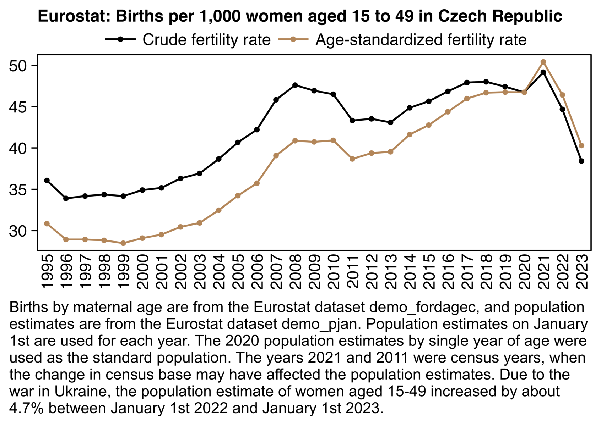
api="https://ec.europa.eu/eurostat/api/dissemination/sdmx/2.1/data/"
pop=fread(paste0(api,"demo_pjan?format=TSV"),sep="\t",header=T,na.strings=":")
meta=fread(text=pop[[1]],header=F)
pick=meta[,V5=="CZ"&V4=="F"]
pop=cbind(meta[pick,.(age=V3)],year=rep(1960:2024,each=sum(pick)),pop=unlist(pop[pick,-1]))
pop[,pop:=as.integer(gsub("\\D","",pop))]
t=fread(paste0(api,"demo_fordagec?format=TSV"),header=T,na.strings=":")
meta=fread(text=t[[1]])
pick=meta[,V5=="CZ"&V4=="TOTAL"]
d=cbind(meta[pick,.(age=V3)],year=rep(1960:2023,each=sum(pick)),births=as.integer(unlist(t[pick,-1])))
d=d[age%like%"^Y..$"&year>=1995]
me=merge(d,pop)
me=merge(me[year==2020,.(age,std=pop/sum(pop)*1e3)],me)
p=me[,.(y=c(sum(births)/sum(pop)*1e3,sum(births/pop*std)),z=1:2),.(x=year)]
p[,z:=factor(z,,paste(c("Crude","Age-standardized"),"fertility rate"))]
xstart=1995;xend=2023;xbreak=xstart:xend
p=p[x%in%xstart:xend]
ylim=extendrange(p$y,,.04);ybreak=pretty(ylim,7)
ggplot(p,aes(x,y,z))+
geom_line(aes(color=z),linewidth=.6)+
geom_point(aes(color=z),size=1.1)+
labs(x=NULL,y=NULL,title="Eurostat: Births per 1,000 women aged 15 to 49 in Czech Republic")+
annotate("text",x=1995,y=25.3,label=note,color=hsv(3/36,.5,.5),size=3.8,hjust=0,vjust=1,lineheight=.9)+
scale_x_continuous(limits=c(xstart-.5,xend+.5),breaks=xbreak)+
scale_y_continuous(limits=ylim,breaks=ybreak)+
scale_color_manual(values=c("black",hsv(3/36,.5,.7)))+
coord_cartesian(clip="off",expand=F)+
guides(color=guide_legend(ncol=2,byrow=F))+
theme(axis.text=element_text(size=11,color="black"),
axis.text.x=element_text(angle=90,vjust=.5,hjust=1),
axis.text.y=element_text(margin=margin(,3)),
axis.ticks=element_line(linewidth=.4,color="black"),
axis.ticks.length.x=unit(0,"pt"),
axis.ticks.length.y=unit(4,"pt"),
legend.background=element_blank(),
legend.box.background=element_blank(),
legend.box.spacing=unit(0,"pt"),
legend.direction="vertical",
legend.justification="center",
legend.key=element_blank(),
legend.key.height=unit(13,"pt"),
legend.key.width=unit(26,"pt"),
legend.margin=margin(,,4),
legend.position="top",
legend.spacing.x=unit(2,"pt"),
legend.spacing.y=unit(0,"pt"),
legend.text=element_text(size=11,vjust=.5),
legend.title=element_blank(),
panel.background=element_blank(),
panel.border=element_rect(fill=NA,linewidth=.4),
panel.spacing=unit(2,"pt"),
plot.margin=margin(5,5,5,5),
plot.subtitle=element_text(margin=margin(,,5)),
plot.title=element_text(size=11.3,face=2,margin=margin(2,,3)))
ggsave("1.png",width=5.6,height=2.8,dpi=300*4)
sub="Births by maternal age are from the Eurostat dataset demo_fordagec, and population estimates are from the Eurostat dataset demo_pjan. Population estimates on January 1st are used for each year. The 2020 population estimates by single year of age were used as the standard population. The years 2021 and 2011 were census years, when the change in census base may have affected the population estimates. Due to the war in Ukraine, the population estimate of women aged 15-49 increased by about 4.7% between January 1st 2022 and January 1st 2023."
system(paste0("mogrify -trim 1.png;w=`identify -format %w 1.png`;magick 1.png \\( -size $[w]x -font Arial -interline-spacing -3 -pointsize $[43*4] caption:'",gsub("'","'\\\\''",sub),"' -splice x100 \\) -append -resize 25% -bordercolor white -border 26 -colors 256 1.png"))
The reason for the increase between 2020 and 2021 is because 2021 was a census year, and the population estimates of reproductive-age women were revised downwards in 2021, but the population estimate for 2020 was based on the 2011 census. The issue was discussed in a blog post by the Czech COVID data group SMIS: [https://smis-lab.cz/2023/02/23/opomenute-aspekty-hodnoceni-nejnovejsich-trendu-ve-vyvoji-poctu-narozenych-deti-a-plodnosti/]
The estimated numbers of women of reproductive age will then be used for the standard calculation of total fertility for the years 2011 to 2021. For the calculation, we will also use data on the number of live births by mother's age, which are regularly published by the Czech Statistical Office in the Demographic Yearbooks of the Czech Republic . Specifically, we are based on tables D.04 Live births by mother's age, legitimacy and birth order.
The resulting estimate of the development of total fertility in the Czech Republic from 2011 to 2021 is shown in Figure 5 in green, the red line shows the original, officially published values.
Figure 5: Development of total fertility in the Czech Republic from 2011 to 2021 according to official data from the Czech Statistical Office (red) and after recalculation based on data from the 2021 census (green). Data: Czech Statistical Office.It should be noted that the officially reported total fertility rates were published gradually in the years between censuses, when statisticians adjusted estimates of the number of women of reproductive age. However, the latest census (2021) showed that these estimates were significantly overestimated and the actual total fertility rate was therefore probably higher than officially published.
The green line in the plot above uses intercensal population estimates, where the population estimates based on the 2011 census were modified so that they matched the estimates based on the 2021 census after the switch of census base. But my plot used population estimates from Eurostat which do not appear to be intercensal estimates.
The same blog post included this plot that shows the percentage change in the population estimate of reproducive-age women compared to the previous year, where there are regular drops in the estimate during census years, but there's a particularly big drop in 2021:
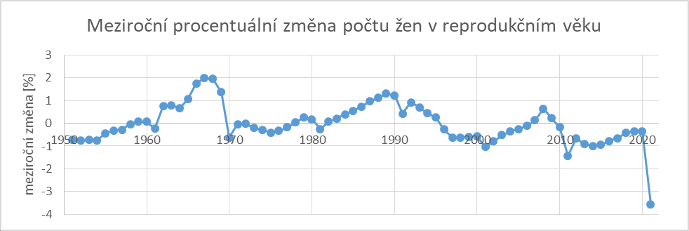
The next plot is based on the same two Eurostat datasets as my previous plot. There's a sudden drop in population size between 2020 and 2021, but it's due to the switch of census base. And there's a big increase in population size between 2022 and 2023, but it's because I used resident population estimates on January 1st of each year, so Ukrainian migrants were only added to the population size in 2023:
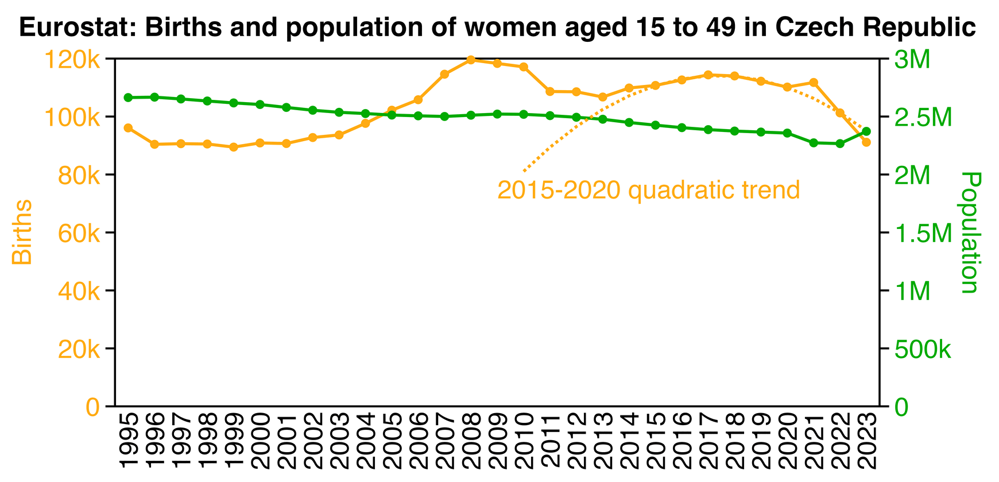
api="https://ec.europa.eu/eurostat/api/dissemination/sdmx/2.1/data/"
pop=fread(paste0(api,"demo_pjan?format=TSV"),sep="\t",header=T,na.strings=":")
meta=fread(text=pop[[1]],header=F)
pick=meta[,V5=="CZ"&V4=="F"]
pop=cbind(meta[pick,.(age=V3)],year=rep(1960:2024,each=sum(pick)),pop=unlist(pop[pick,-1]))
pop[,pop:=as.integer(gsub("\\D","",pop))]
t=fread(paste0(api,"demo_fordagec?format=TSV"),header=T,na.strings=":")
meta=fread(text=t[[1]])
pick=meta[,V5=="CZ"&V4=="TOTAL"]
d=cbind(meta[pick,.(age=V3)],year=rep(1960:2023,each=sum(pick)),births=as.integer(unlist(t[pick,-1])))
d=d[age%like%"^Y..$"&year>=1995]
me=merge(d,pop)
me=merge(me[year==2020,.(age,std=pop/sum(pop)*1e3)],me)
p=me[,.(y=c(sum(births),sum(pop)),z=1:2),.(x=year)]
p[,z:=factor(z,,c("Births","Population"))]
xstart=1995;xend=2023;xbreak=xstart:xend
p=p[x%in%xstart:xend]
ybreak=pretty(c(0,max(p[z==levels(z)[1],y])),7);ylim=range(ybreak)
ybreak2=p[z==z[2],pretty(c(0,y),7)];secmult=max(ybreak)/max(ybreak2)
pal=c("#ffaa11","#00aa00")
ggplot(p,aes(x,y=ifelse(z==levels(z)[2],y*secmult,y),z))+
annotate("rect",xmin=xstart-.5,xmax=xend+.5,ymin=0,ymax=ylim[2],linewidth=.4,lineend="square",fill=NA,color="black")+
geom_line(aes(color=z),linewidth=.6)+
geom_point(aes(color=z),size=1.1)+
labs(x=NULL,y="Births",title="Eurostat: Births and population of women aged 15 to 49 in Czech Republic")+
scale_x_continuous(limits=c(xstart-.5,xend+.5),breaks=xbreak)+
scale_y_continuous(limits=ylim,breaks=ybreak,labels=kim,sec.axis=sec_axis(trans=~./secmult,breaks=ybreak2,name="Population",labels=kim))+
scale_color_manual(values=pal)+
coord_cartesian(clip="off",expand=F)+
guides(color=guide_legend(ncol=2,byrow=F))+
theme(axis.text=element_text(size=11,color="black"),
axis.text.x=element_text(angle=90,vjust=.5,hjust=1),
axis.text.y.left=element_text(color=pal[1]),
axis.text.y.right=element_text(color=pal[2]),
axis.title.y.left=element_text(color=pal[1]),
axis.title.y.right=element_text(margin=margin(,,,4),color=pal[2]),
axis.ticks=element_line(linewidth=.4,color="black"),
axis.ticks.length.x=unit(0,"pt"),
axis.ticks.length.y=unit(4,"pt"),
legend.position="none",
panel.background=element_blank(),
plot.margin=margin(5,5,5,5),
plot.title=element_text(size=11.3,face=2,margin=margin(2,,7),hjust=.5))
ggsave("1.png",width=5.8,height=2.8,dpi=300*4)
system("magick 1.png -resize 25% -colors 256 1.png")
The plot above shows that the number of births started going down after 2017, and even the number of births in the year 2022 roughly fall on the 2015-2020 quadratic trend. But there was just an unusually high number of births in 2021, which may have partially been due to the lockdowns in 2020.
In Manniche et al.'s spreadsheet the population size of women aged 18 to 39 was listed as 1,277,590 in 2021, 1,340,229 in 2022, and 1,342,367 in 2023. The figures were population estimates on December 31st, which are identical to Eurostat's population estimates on January 1st the next year (or off by 3 in the case of 2021/2022 for some reason):
| Year | Women aged 18 to 39 at Eurostat | Comment |
|---|---|---|
| 2019 | 1390299 | |
| 2020 | 1360326 | |
| 2021 | 1288901 | decrease due to census |
| 2022 | 1277587 | |
| 2023 | 1340229 | increase due to Ukrainian migrants |
| 2024 | 1342367 |
Due to Ukrainian refugees, the population size of women aged 18 to 39 increased by about 4.9% between 2022 and 2023 at Eurostat, or between 2021 and 2022 in Manniche's spreadsheet. The war started on February 24th 2022, so March was the month that had by far the most migrants arriving. [https://zpravy.kurzy.cz/787003-vyvoj-obyvatelstva-ceske-republiky-migrace/]
However even after accounting for Ukrainian migrants and the change in census base, the birth rate in 2023 in particular was still very low, and I don't know how to explain it.
Manniche et al.'s spreadsheet says that their data came from the FOI request "UZIS/055697/2023". When I googled for the identifier of the request, I found a PDF of another FOI request where someone asked these questions from ÚZIS: [https://www.uzis.cz/res/file/poskytnute-informace/25-01-inf106-1999-odpoved.pdf, translated]
The Institute of Health Information and Statistics of the Czech Republic (hereinafter "ÚZIS") as an obligated entity under § 2 para. 1 of Act No. 106/1999 Coll., on Free Access to Information, as amended (hereinafter also "Act on Free Access to Information") has assessed your request dated January 22, 2025, to provide the following information:
- Did your institution approve the request, in the sense that the applicant was granted the requested data under ref. no.: UZIS/000065/2025?
- If so, what was considered in this request regarding childbirth of vaccinated and unvaccinated women aged 18 to 39?
- According to analysis UZIS/000065/2025, among women aged 18 to 39 in 2023, there were 32,999 childbirths by unvaccinated women and 47,098 childbirths by vaccinated women, while analysis UZIS/074752/2024 states that among the same group in 2023, 36,055 childbirths were by unvaccinated and 47,104 by vaccinated women. Why do these two analyses differ so fundamentally in their claims?
- The updated analysis (UZIS/055697/2023) also matches the data of UZIS/000065/2025 and UZIS/074752/2024. According to it, there were 36,055 childbirths by unvaccinated women and 47,104 childbirths by vaccinated women in 2023. Is this already the third analysis of the same dataset with completely different results? Why are the results of three analyses of the same dataset so fundamentally different?
ÚZIS posted this response:
Thank you for your notification, based on which we discovered that in the first output (ref. no.: UZIS/000065/2025) there was an administrative error, involving a swap of labels for the categories (vaccinated and unvaccinated mothers). We have also informed the original requester about this fact.
As for other discrepancies in outputs, each request was not completely identical, which led to minor limitations in the individual outputs (e.g., in some cases, invalid identifiers were removed, data were filtered by gender, age, or processed with delays, etc.).
Definition of the first output (UZIS/074752/2024): Mothers aged 18-39 based on the age entered in the National Register of Reproductive Health (NRRZ).
Definition of the second output (UZIS/055697/2023): Mothers aged 18-39 based on age calculated from year of birth and year of delivery.
Definition of the third output (UZIS/000065/2025): Mothers aged 18-39 based on age entered in NRRZ with limitation to valid records and linkable personal identifiers. Vaccination limited by gender and age.